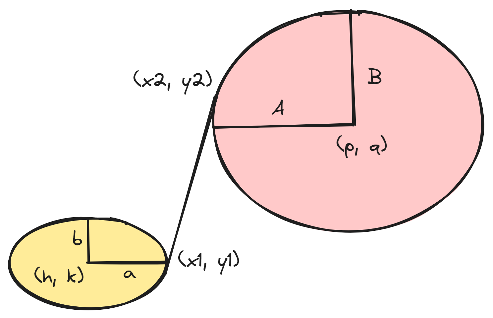

cavsim2d.utils package
Submodules
cavsim2d.utils.shared_functions module
- cavsim2d.utils.shared_functions.add_ellipse(cav, pt_indx, curve_indx, start_pt, center_pt, majax_pt, end_pt)[source]
- cavsim2d.utils.shared_functions.apply_perturbation(base, deltas: list, perturbed_vars: list, mode: str)[source]
mode=’add’: x_new = x + δ mode=’mul’: x_new = x * (1 + δ)
- cavsim2d.utils.shared_functions.arcTo(h, k, a, b, step, start, end, plot=False)[source]
- Parameters:
h (float, int) – x-position of the center
k (float, int) – y-position of the center
float (b) – radius on the x-axis
int – radius on the x-axis
float – radius on the y-axis
int – radius on the y-axis
step (int)
start (list, ndarray)
end (list, ndarray)
plot (bool)
- cavsim2d.utils.shared_functions.arcToTheta(h, k, a, b, start, end, t1, t2, step, plot=False)[source]
Calculates the points on an arc from a start angle to an end angle
- Parameters:
h (float, int) – x-position of the center
k (float, int) – y-position of the center
float (b) – radius on the x-axis
int – radius on the x-axis
float – radius on the y-axis
int – radius on the y-axis
step (int, float)
start (list, ndarray)
end (list, ndarray)
plot (bool)
- cavsim2d.utils.shared_functions.area_pareto_fronts(pareto1, pareto2)[source]
Plot the two Pareto fronts and correctly fill the area between them, handling edge cases.
- cavsim2d.utils.shared_functions.calculate_alpha(A, B, a, b, Ri, L, Req, L_bp)[source]
Calculates the largest angle the tangent line of two ellipses makes with the horizontal axis
- Parameters:
A (float)
B (float)
a (float)
b (float)
Ri (float)
L (float)
Req (float)
L_bp (float)
- Returns:
alpha (float) – Largest angle the tangent line of two ellipses makes with the horizontal axis
error_msg (int) – State of the iteration, failed or successful. Refer to
- cavsim2d.utils.shared_functions.calculate_bounded_area(x_values, y_values1, y_values2)[source]
Calculate the area between two Pareto fronts.
- cavsim2d.utils.shared_functions.cn_leg_05_1(n, option=1)[source]
The rule has order
O = 2 N^2 + N + 2.
The rule has precision P = 5.
CN_LEG is the cube [-1,+1]^N with the Legendre weight function
w(x) = 1.
Note
Dimensional Threshold Limitation: In practice, the Stroud 3 quadrature rule may be effective in dimensions up to around 3 to 6, depending on the specific problem and the function being integrated. Beyond this, the accuracy of the rule typically degrades, and higher-order quadrature rules or Monte Carlo methods might be more appropriate.
- Parameters:
n
option
- cavsim2d.utils.shared_functions.cn_leg_05_2(n)[source]
The rule has order
O = 2 N^2 + 1.
The rule has precision P = 5.
CN_LEG is the cube [-1,+1]^N with the Legendre weight function
w(x) = 1.
Note
Dimensional Threshold Limitation: In practice, the Stroud 5 quadrature rule may be effective in dimensions up to around 5 to 10, depending on the specific problem and the function being integrated. Beyond this, the accuracy of the rule typically degrades, and higher-order quadrature rules or Monte Carlo methods might be more appropriate.
- Parameters:
n
option
- cavsim2d.utils.shared_functions.ellipse_tangent(z, *data)[source]
Calculates the coordinates of the tangent line that connects two ellipses
 - Parameters:
z (list, array like) – Contains list of tangent points coordinate’s variables
[x1, y1, x2, y2]. Seeellipse tangentdata (list, array like) – Contains midpoint coordinates of the two ellipses and the dimensions of the ellipses data =
[coords, dim];coords=[h, k, p, q],dim=[a, b, A, B]
- Return type:
list of four non-linear functions
Note
The four returned non-linear functions are
\[ \begin{align}\begin{aligned}f_1 = \frac{A^2b^2(x_1 - h)(y_2-q)}{a^2B^2(x_2-p)(y_1-k)} - 1\\f_2 = \frac{(x_1 - h)^2}{a^2} + \frac{(y_1-k)^2}{b^2} - 1\\f_3 = \frac{(x_2 - p)^2}{A^2} + \frac{(y_2-q)^2}{B^2} - 1\\f_4 = \frac{-b^2(x_1-x_2)(x_1-h)}{a^2(y_1-y_2)(y_1-k)} - 1\end{aligned}\end{align} \]
{kind=link}
- cavsim2d.utils.shared_functions.enforce_Req_continuity(par_mid, par_end_l, par_end_r, cell_type=None)[source]
Enforce continuity at iris and equator of cavities
- Parameters:
par_mid
par_end_l
par_end_r
cell_type
- cavsim2d.utils.shared_functions.enforce_continuity_df(df: DataFrame) → DataFrame[source]
- Enforce:
Req1==Req2, Req3==Req4, Req5==Req6, … Ri2==Ri3, Ri4==Ri5, Ri6==Ri7, …
in a DataFrame with columns ‘Req1’…’ReqN’ and ‘Ri1’…’RiN’.
- cavsim2d.utils.shared_functions.expand_cells(cav: dict, cells)[source]
- Given shape[‘n_cells’], expand ‘all’ to every half-cell:
[‘cell1_l’,’cell1_r’,…,’cellN_l’,’cellN_r’]
Or accept a single string or list.
- cavsim2d.utils.shared_functions.extend_pareto(pareto1, pareto2)[source]
Extend Pareto fronts by adding boundary points to match their x-ranges.
- cavsim2d.utils.shared_functions.f2b_slashes(path)[source]
Replaces forward slashes with backward slashes for windows OS
- Parameters:
path (str) – Directory path
- cavsim2d.utils.shared_functions.find_all_intersections(pareto1, pareto2)[source]
Find all intersection points between the segments of two Pareto fronts.
- cavsim2d.utils.shared_functions.generate_gauss_legendre_nodes(k: int, bound: float, n: int)[source]
Tensor-product Gauss–Legendre nodes & weights on [-bound,bound].
- cavsim2d.utils.shared_functions.generate_nodes(k: int, bound: float, node_type: list)[source]
Dispatch to the appropriate node generator.
- cavsim2d.utils.shared_functions.generate_normal_nodes(k: int, bound: float, n: int, seed=None)[source]
n independent multivariate normal samples in k dims, each component ~ N(0,bound^2).
- cavsim2d.utils.shared_functions.generate_perturbed_shapes(shape: dict, cells, variables: list, mode: list, node_type: list)[source]
High-level API: returns (shapes, weights).
cells: ‘all’ or list of ‘cellX_l’/’cellX_r’
variables: subset of VAR_NAMES
bound: absolute delta bound
mode: ‘add’ or ‘mul’
n: nodes per dimension (ignored by stroud3)
node_type: ‘uniform’,’gauss_legendre’,’stroud3’
- cavsim2d.utils.shared_functions.generate_stroud3_nodes(k: int, bound: float)[source]
Stroud-III delta-vectors mapped to [-bound,bound] and equal weights.
- cavsim2d.utils.shared_functions.generate_uniform_nodes(k: int, bound: float, n: int)[source]
Uniform random delta-vectors in [-bound,+bound] with equal weights.
- cavsim2d.utils.shared_functions.get_qoi_value(d, obj)[source]
Gets the quantities of interest from simulation results
- Parameters:
d (dict) – Dictionary containing several figures of merits from eigenmode solver
obj (list) – List of objective functions
- cavsim2d.utils.shared_functions.interpolate_pareto(pareto, x_values)[source]
Interpolate y-values for a given set of x-values based on a Pareto front.
- cavsim2d.utils.shared_functions.jac(z, *data)[source]
Computes the Jacobian of the non-linear system of ellipse tangent equations
- Parameters:
z (list, array like) – Contains list of tangent points coordinate’s variables
[x1, y1, x2, y2]. Seeellipse tangentdata (list, array like) – Contains midpoint coordinates of the two ellipses and the dimensions of the ellipses data =
[coords, dim];coords=[h, k, p, q],dim=[a, b, A, B]
- Returns:
J – Array of the Jacobian
- Return type:
array like
- cavsim2d.utils.shared_functions.line_intersection(p1, p2)[source]
Find the intersection point of two line segments (p1 and p2).
- cavsim2d.utils.shared_functions.linspace(start, stop, step)[source]
Like np.linspace but uses step instead of num This is inclusive to stop, so if start=1, stop=3, step=0.5 Output is: array([1., 1.5, 2., 2.5, 3.])
- cavsim2d.utils.shared_functions.merge_equal_columns(df: DataFrame) → DataFrame[source]
Collapse runs of equal columns within each variable (Ri, Req), then reassemble all merged columns in the original half‐cell order.
- cavsim2d.utils.shared_functions.merge_runs_within_variable(df: DataFrame, var: str, rtol=1e-06, atol=1e-08)[source]
For a given variable prefix (e.g. ‘Ri’ or ‘Req’), find all columns like ‘Ri1’,’Ri2’,… sorted by index; then group any consecutive indices i, i+1 where df[Ri_i] ≈ df[Ri_{i+1}], producing merged names [‘Ri2Ri3’], etc. Returns an ordered list of (merged_name, series).
- cavsim2d.utils.shared_functions.plot_pillbox_geometry(n_cell, L, Req, Ri, S, L_bp, beampipe='none', plot=False, **kwargs)[source]
- Parameters:
n_cell
L
Req
Ri
S
L_bp
beampipe
plot
kwargs
- cavsim2d.utils.shared_functions.quad_stroud3(rdim, degree)[source]
Stroud-3 quadrature in \([0,1]^k\)
Note
Dimensional Threshold Limitation: In practice, the Stroud 3 quadrature rule may be effective in dimensions up to around 3 to 6, depending on the specific problem and the function being integrated. Beyond this, the accuracy of the rule typically degrades, and higher-order quadrature rules or Monte Carlo methods might be more appropriate.
- Parameters:
rdim (int) – Dimension of variables
degree (int) – Degree
- Return type:
Nodes and corresponding weights
- cavsim2d.utils.shared_functions.shapes_to_dataframe(cavs_dict)[source]
Convert a list of perturbed-shape dicts into a DataFrame.
Columns are named A1, B1, a1, …, A2, B2, a2, … etc., where each half-cell (left then right) across all cells is assigned an increasing index.
- cavsim2d.utils.shared_functions.shortest_direction(start_angle, end_angle)[source]
- Parameters:
start_angle (float, int) – Start angle in radians
end_angle (float, int) – End angle in radians
- cavsim2d.utils.shared_functions.stroud(p)[source]
Stroud-3 method
- Parameters:
p (int) – Dimension
- Return type:
Nodes of quadrature rule in [0,1]**p (column-wise)
- cavsim2d.utils.shared_functions.stroud3_nodes_and_weights(p: int)[source]
Stroud’s 3rd-degree rule nodes & weights in [0,1]^p.
- cavsim2d.utils.shared_functions.tangent_coords(A, B, a, b, Ri, L, Req, L_bp, lft=0, tangent_check=False)[source]
Calls to
utils.shared_function.ellipse_tangent()- Parameters:
A (float) – Equator ellipse dimension
B (float) – Equator ellipse dimension
a (float) – Iris ellipse dimension
b (float) – Iris ellipse dimension
Ri (float) – Iris radius
L (float) – Cavity half cell length
Req (float) – Cavity equator radius
L_bp (float) – Cavity beampipe length
tangent_check (bool) – If set to True, the calculated tangent line as well as the ellipses are plotted and shown
- Returns:
df – Pandas dataframe containing information on the results from fsolve
- Return type:
pandas.Dataframe
- cavsim2d.utils.shared_functions.update_alpha(cell, cell_parameterisation='simplecell')[source]
Update geometry json file variables to include the value of alpha
- Parameters:
cell – Cavity geometry parameters
- Return type:
List of cavity geometry parameters
- cavsim2d.utils.shared_functions.weighted_kurtosis(var, wts, mean, std)[source]
Calculates the weighted kurtosis, returning NaN where std==0.
- cavsim2d.utils.shared_functions.weighted_skew(var, wts, mean, std)[source]
Calculates the weighted skewness, returning NaN where std==0.
- cavsim2d.utils.shared_functions.weighted_variance(var, wts, mean)[source]
Calculates the weighted variance
- cavsim2d.utils.shared_functions.writeCavityForMultipac(file_path, n_cell, mid_cell, end_cell_left=None, end_cell_right=None, beampipe='none', plot=True, unit=0.001, scale=1)[source]
Write cavity geometry
- Parameters:
file_path (str) – File path to write geometry to
n_cell (int) – Number of cavity cells
mid_cell (list, ndarray) – Array of cavity middle cells’ geometric parameters
end_cell_left (list, ndarray) – Array of cavity left end cell’s geometric parameters
end_cell_right (list, ndarray) – Array of cavity left end cell’s geometric parameters
beampipe (str {"left", "right", "both", "none"}) – Specify if beam pipe is on one or both ends or at no end at all
plot (bool) – If True, the cavity geometry is plotted for viewing
scale
unit
- cavsim2d.utils.shared_functions.writeCavityForMultipac_multicell(file_path, n_cell, mid_cell, end_cell_left=None, end_cell_right=None, beampipe='none', plot=True, unit=0.001, scale=1)[source]
Write cavity geometry
- Parameters:
file_path (str) – File path to write geometry to
n_cell (int) – Number of cavity cells
mid_cell (list, ndarray) – Array of cavity middle cells’ geometric parameters
end_cell_left (list, ndarray) – Array of cavity left end cell’s geometric parameters
end_cell_right (list, ndarray) – Array of cavity left end cell’s geometric parameters
beampipe (str {"left", "right", "both", "none"}) – Specify if beam pipe is on one or both ends or at no end at all
plot (bool) – If True, the cavity geometry is plotted for viewing
- cavsim2d.utils.shared_functions.write_cavity_geometry_cli(IC, OC, OC_R, BP, n_cell, scale=1, ax=None, bc=None, tangent_check=False, ignore_degenerate=False, plot=False, write=None, dimension=False, contour=False, **kwargs)[source]
Plot cavity geometry
- Parameters:
tangent_check
bc
ax
ignore_degenerate
IC (list, ndarray) – Inner Cell geometric parameters list
OC (list, ndarray) – Left outer Cell geometric parameters list
OC_R (list, ndarray) – Right outer Cell geometric parameters list
BP (str {"left", "right", "both", "none"}) – Specify if beam pipe is on one or both ends or at no end at all
n_cell (int) – Number of cavity cells
scale (float) – Scale of the cavity geometry
- cavsim2d.utils.shared_functions.write_cavity_geometry_cli_flattop(IC, OC, OC_R, BP, n_cell, scale=1, ax=None, bc=None, tangent_check=False, ignore_degenerate=False, plot=False, write=None, dimension=False, contour=False, **kwargs)[source]
Write cavity geometry
- Parameters:
BP
OC_R
OC
ignore_degenerate
file_path (str) – File path to write geometry to
n_cell (int) – Number of cavity cells
mid_cell (list, ndarray) – Array of cavity middle cells’ geometric parameters
end_cell_left (list, ndarray) – Array of cavity left end cell’s geometric parameters
end_cell_right (list, ndarray) – Array of cavity left end cell’s geometric parameters
beampipe (str {"left", "right", "both", "none"}) – Specify if beam pipe is on one or both ends or at no end at all
plot (bool) – If True, the cavity geometry is plotted for viewing
- cavsim2d.utils.shared_functions.write_cavity_geometry_cli_multicell(n_cell, multicell, BP, scale=1, ax=None, bc=None, tangent_check=False, ignore_degenerate=False, plot=False, write=None, dimension=False, contour=False, **kwargs)[source]
Plot cavity geometry
- Parameters:
tangent_check
bc
ax
ignore_degenerate
IC (list, ndarray) – Inner Cell geometric parameters list
OC (list, ndarray) – Left outer Cell geometric parameters list
OC_R (list, ndarray) – Right outer Cell geometric parameters list
BP (str {"left", "right", "both", "none"}) – Specify if beam pipe is on one or both ends or at no end at all
n_cell (int) – Number of cavity cells
scale (float) – Scale of the cavity geometry
- cavsim2d.utils.shared_functions.write_cavity_geometry_cli_quarter(cell, bp=False, scale=1, ax=None, bc=None, tangent_check=False, ignore_degenerate=False, plot=False, write=None, dimension=False, contour=False, **kwargs)[source]
Plot cavity geometry
- Parameters:
tangent_check
bc
ax
ignore_degenerate
IC (list, ndarray) – Inner Cell geometric parameters list
OC (list, ndarray) – Left outer Cell geometric parameters list
OC_R (list, ndarray) – Right outer Cell geometric parameters list
BP (str {"left", "right", "both", "none"}) – Specify if beam pipe is on one or both ends or at no end at all
n_cell (int) – Number of cavity cells
scale (float) – Scale of the cavity geometry
- cavsim2d.utils.shared_functions.write_cavity_geometry_cli_wo_gmsh(IC, OC, OC_R, BP, n_cell, scale=1, ax=None, bc=None, tangent_check=False, ignore_degenerate=False, plot=False, write=None, dimension=False, contour=False, **kwargs)[source]
Plot cavity geometry
- Parameters:
tangent_check
bc
ax
ignore_degenerate
IC (list, ndarray) – Inner Cell geometric parameters list
OC (list, ndarray) – Left outer Cell geometric parameters list
OC_R (list, ndarray) – Right outer Cell geometric parameters list
BP (str {"left", "right", "both", "none"}) – Specify if beam pipe is on one or both ends or at no end at all
n_cell (int) – Number of cavity cells
scale (float) – Scale of the cavity geometry
- cavsim2d.utils.shared_functions.write_cst_paramters(key, ic_, oc_l, oc_r, projectDir, cell_type, sub_dir='', opt=False, solver='NGSolveMEVP')[source]
Writes cavity geometric data that can be imported into CST Studio
- Parameters:
key (str, int) – Cavity marker
ic (list, array like) – Inner cavity cell geometric variables
oc_l (list, array like) – Outer cavity cell geometric variables
projectDir (str) – Project directory
cell_type (str) – Single cell or multicell